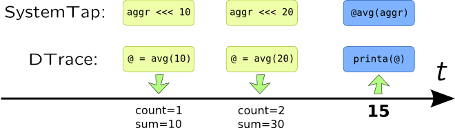

Associative arrays
Definition
Associative array is a sequence of values which are accessible through one or more keys. Any types may be used for hashing, but they have to be comparable, and in some cases hashable.
Associative arrays are useful for saving last observable state related to a some object, so it can be reused in subsequent probes. For example, let's save last read or write operation performed on file. You will need to define keys and value types in DTrace:
string last_fop[int, int];
syscall::read:entry, syscall::write:entry {
last_fop[pid, (int) arg0] = probefunc;
}
In SystemTap, however, they are deduced from the assignment:
global last_fop;
syscall.read, syscall.write {
last_fop[pid(), $fd] = pn();
}
To delete entry from an associative array, it should be assigned to 0 in DTrace or deleted using delete array[key1]; expression in SystemTap. If value does not exist, both DTrace and SystemTap will return 0 as a default value.
In DTrace you only can access value in associative array knowing its key, in SystemTap along with that you can walk entire array with foreach statement:
foreach([pid+, fd] in last_fop limit 100) {
printf("%d\t%d\t%s\n", pid, fd, last_fop[pid, fd]);
}
Variables for keys are listed in square braces. If variable name ends with + or -, than keys will be sorted in ascend or descend order correspondingly (only one key may be used for sorting). Optional limit N part allows to limit amount of entries.
Maximum amount of entries that associative array can keep is limited by dynvarsize tunable in DTrace or MAXMAPENTRIES in SystemTap. Additionally, you may explicitly specify maximum number of entries in array:
global array[SIZE];
Warning
Starting with SystemTap 2.1 it allocates MAXMAPENTRIES entries for associative array on per-cpu basis (using not only online, but possible CPUs too) at start (to avoid further allocation faults). Also, it allocates memory for strings statically too. So to keep associative array with string key you will need at least NR_CPUS * MAXMAPENTRIES * MAP_STRING_LENGTH which gives 128 megabytes of memory on CentOS 7.0 x86_64.
References
Aggregations
Aggregations are most useful for evaluating system performance (they are called statistics in SystemTap). Aggregation will update intermediate set of parameters when new value is added. Overall value is calculated from that intermediate set when its printing is requested. Let's for example see how it works for mean value –- dynamic tracing system saves count of added values and their sum, and when values need to be printed, sum is divided to a count:

Aggregations in DTrace reside in separate namespace: each name of aggregation begins with at-symbol @. Single at-symbol @ is an alias to @_ and is a shorter possible aggregation name which is useful for one-liners. Moreover, if it was not printed in the END probe, or timer probe, DTrace will automatically print it for you. There is no need to declare aggregation, and it support key access same way associative array does. When value is added to a aggregation, it is "assigned" to a return value of aggregating function, i.e. @fds = avg(arg0); will create an aggregation which calculates mean value of arg0.
SystemTap have a statistics. They are do not support indexing like associative arrays (but they may be a values in associative arrays), thus they are special kind a variable. To create a statistic you need to use aggregate operator <<< instead of assignment operator =, for example: fds <<< $fd. Aggregating function is used when result is printed, and begins with @, i.e. @avg(fds) will return mean value of statistic fds. This allows to use single statistic for multiple functions wherever possible.
Here are list of aggregating functions (note that in SystemTap they have to be preceded with @):
-
count–- counts number of values added -
sum–- sums added value -
min/max/avg–- minimum, maximum and mean value, respectively -
stddev–- standard deviation (only in DTrace) -
lquantize–- prints linear histogram (hist_linearin SystemTap) -
quantize–- prints logarithmic histogram (hist_login SystemTap)
The following actions may be performed on aggregations:
| Action | DTrace | SystemTap |
| Add a value |
@aggr[keys] = func(value); |
aggr[keys] <<< value; |
printa(@aggr) or
printa("format string", @aggr1, @aggr2, ...) |
println(@func(aggr))
(use foreach in case of associative arrays). |
|
| Flush values and keys |
clear(@aggr) (only values) or
trunc(@aggr) (both keys and values) |
delete aggr or delete aggr[keys] |
| Normalize |
normalize(@aggr, value); and
denormalize(@aggr); |
Use division / and multiplication * on results of aggregating functions |
| Limit number of values |
trunc(@aggr, num) |
Use limit clause in foreach |
Warning
Aggregations may be sorted in DTrace using aggsortkey, aggsortpos, aggsortkeypos and aggsortrev tunables.
Aggregations are extremely useful for writing stat-like utilities. For example, let's write utilities that count number of write system calls and amount of kilobytes they written.
#pragma D option aggsortkey
#pragma D option aggsortkeypos=0
syscall::write:entry
{
@wbytes[pid, execname, arg0] = sum(arg2);
@wops[pid, execname, arg0] = count();
}
tick-1s
{
normalize(@wbytes, 1024);
printf("%5s %12s %3s %7s %7s\n",
"PID", "EXECNAME", "FD", "OPS", "KBYTES");
printa("%5u %12s %3u %7@d %7@dK\n", @wops, @wbytes);
clear(@wbytes);
}
printa format string, and they are going in the same order they are passed as printa parameters. Format fields for aggregations use @ character. Sorting will be performed according to a PID (due to aggsortkey tunable), not by number of operations or amount of bytes written. Option aggsortkeypos is redundant here, because 0 is default value if aggsortkey is set.
SystemTap has similar code, but printa is implemented via our own foreach cycle. On the other hand, we will keep only one associative array here:
global wstat;
probe syscall.write {
wstat[pid(), execname(), fd] <<< count;
}
probe timer.s(1) {
printf("%5s %12s %3s %7s %7s\n",
"PID", "EXECNAME", "FD", "OPS", "KBYTES");
foreach([pid+, execname, fd] in wstat) {
printf("%5d %12s %3d %7u %7u\n",
pid, execname, fd, @count(wstat),
@sum(wstat) / 1024);
}
delete wstat;
}
PID EXECNAME FD OPS KBYTES 15881 sshd 3 1 0 16170 stapio 1 1 0 16176 python 8 8052 32208 16176 python 7 8045 32180 16176 python 10 8007 32028 16176 python 9 8055 32220
References